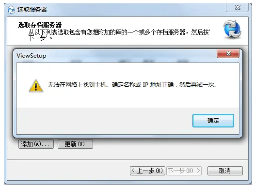
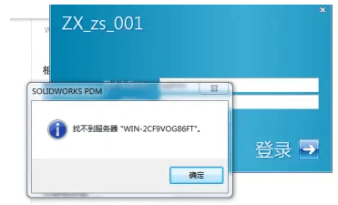

PDM连接失败处理方法
原理
局域网
连接ping
如果网络中存在访问服务器的连接问题，你可以尝试下面方法检查原因：
防火墙Telnet
方法：
关闭服务器防火墙后，查看客户端是否可正常连接，若不可以应检查网络是否通，若可以则为防火墙设置问题。
方法2: 防火墙高级面板方式
1.进入控制面板->管理工具->找到“高级安全Windows防火墙
2点击入站规则
3.找到 回显请求-ICMPv4-In (Echo Request -ICMPv4-In)4.右键点击规则点击启用规则(Enable)
检查网络是否通：服务器与客户端在同一局域网中，ping IP，必须通，但服务需开启；
防火墙设置：
防火墙-入站规则与出站规则分别添加端口TCP与UDP，特定端口3030,1403,1433,1434
方法2: 防火墙高级面板方式
1.进入控制面板->管理工具->找到“高级安全 Windows防火墙
2点击入站规则
3.找到回显请求-ICMPv4-In (Echo Request -ICMPv4-In)
4.右键点击规则点击”启用规则(Enabie)
无法在网络上找到主机
客户端提示无法在网络上找到主机
解决方法：客户端IP设为固定IP
找不到服务器
客户端无法搜索到服务器。如果网络中存在访问服务器的连接问题，你可以尝试下面方法检查原因：
方法：
关闭服务器防火墙后，查看客户端是否可正常连接，若不可以应检查网络是否通，若可以则为防火墙设置问题。检查网络是否通：
防火墙设置： 防火墙-入站规则与出站规则分别添加端口TCP与UDP，特定端口3030,1403,1433,1434